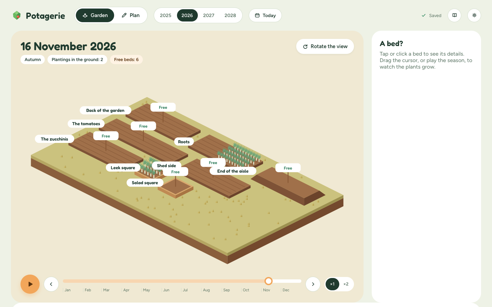
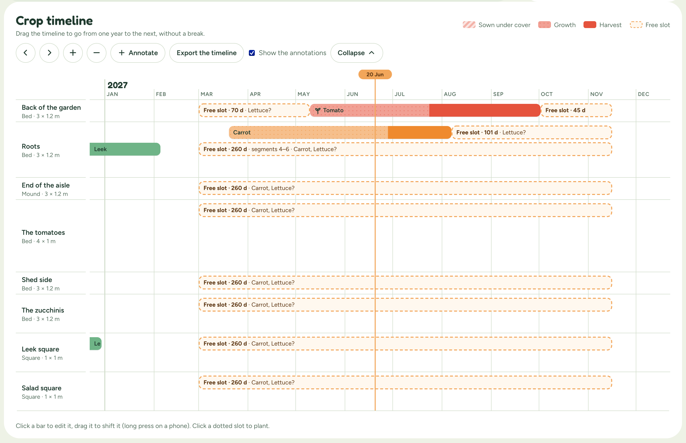

Plan your vegetable garden, then watch it grow
Draw your plot, plan what goes where and when, and play the season on a little isometric garden.
Free and open source. No account, no server: your garden stays on your computer.
Everything a small garden needs
Potagerie does the date arithmetic, so you can think about what to grow.
Draw your plot
Set the size of your land, then drag beds, squares, mounds and planters onto it. The app minds the aisles and asks before two beds get too close.
A timeline of plantings
One row per bed. Sowing, growing and harvest are drawn as phases, and conflicts are refused before they happen.
67 crops
From tomatoes to garlic, with sowing windows, spacing and harvest times. Filter by family or by what is in season now.
Suggestions for free slots
A bed empty for a few weeks? Potagerie proposes the crops that fit the gap and fill it best.
Play the season
Move the cursor or press play: the plants of the garden grow, stage by stage, over the year.
Export and keep
Export the timeline as a PNG or a PDF to print, and the whole garden as a file to back up or move.
Three views of one garden
The same data, seen as a living garden, as a plan and as a calendar.
The garden, in 3D
Your beds as a little isometric garden. Drag the date cursor, or press play: the plants grow stage by stage, from sowing to harvest, over the year.
- Click a bed to open its details
- Rotate the view
- Play the whole season in 15 seconds

The plan
Draw your plot, then drag beds, squares, mounds and planters onto it. Move and resize them with the mouse or your finger; the app asks before two beds get closer than the aisle.
- Click free grass to add a bed
- Overlaps and edges are refused
- The plan carries over from year to year

The timeline
One row per bed. Sowing under cover, growth and harvest are drawn for every planting, and the free periods between them are marked with the crops that fit.
- Drag a bar to shift a planting
- Click a free slot to plant a suggestion
- Export it as a PNG or a PDF

Get Potagerie
Installers for macOS (universal) and Windows are attached to each release. The app is not signed yet, so the system asks you to confirm the first launch.
Questions
Where is my data?
In a single file on your computer (potagerie.db). Nothing is sent anywhere. You can export your garden to a file and import it on another machine.
macOS says the developer cannot be identified
The app is not signed with an Apple Developer account. Open System Settings, Privacy & Security, and choose “Open Anyway”. If macOS says the app is damaged, run xattr -dr com.apple.quarantine /Applications/Potagerie.app.
Which languages?
English and French. The app follows the language of your system, and you can change it in the settings.
Is there a phone version?
Not yet: the first release targets the desktop. The interface is already built to adapt to a phone.
Which crops are included?
67 annual vegetables and herbs. Perennials such as asparagus or rhubarb are not in this version.